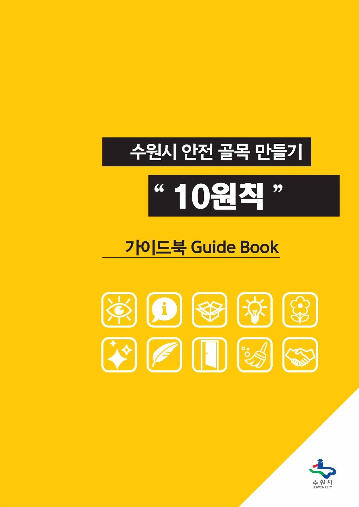
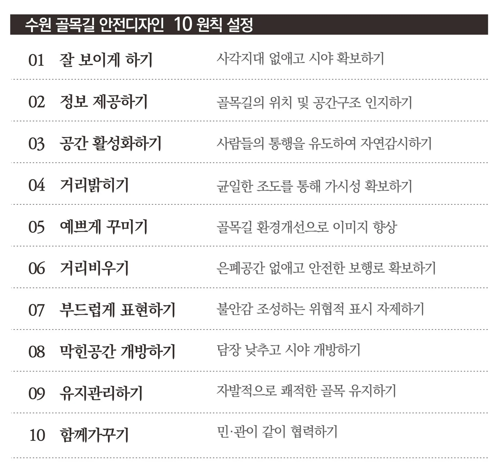
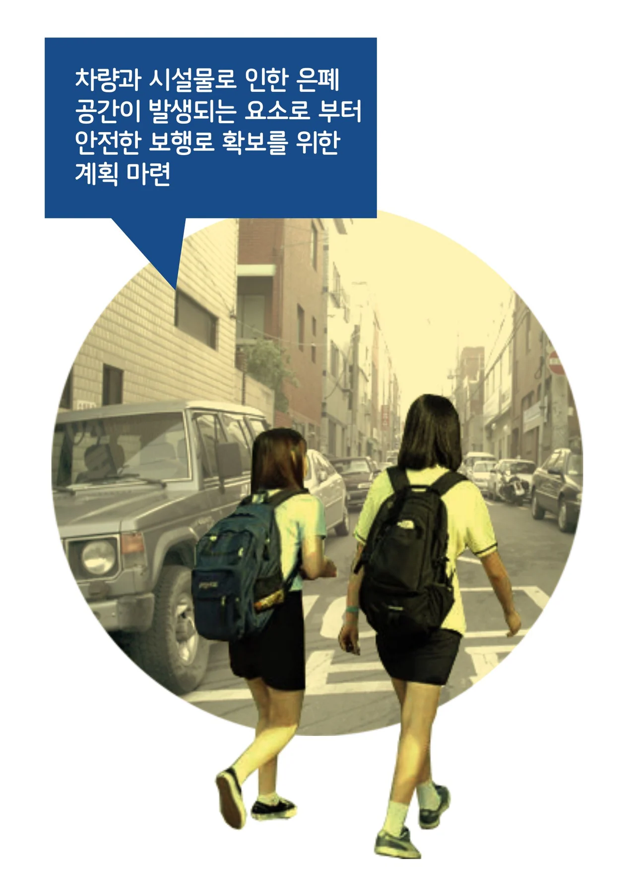
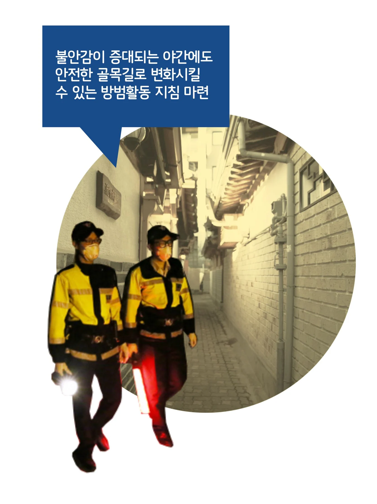
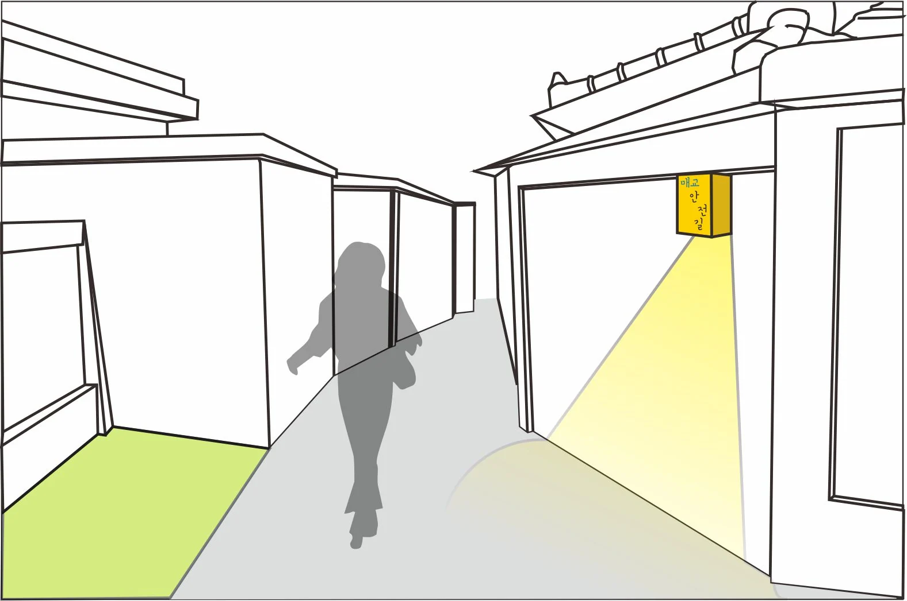
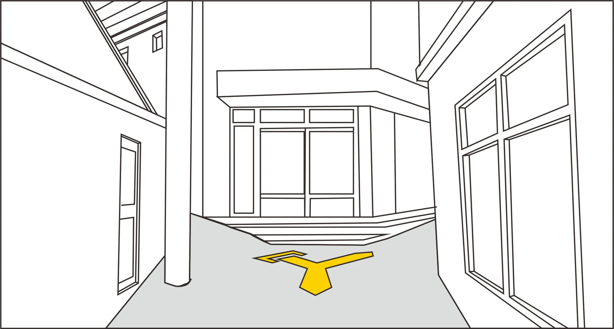
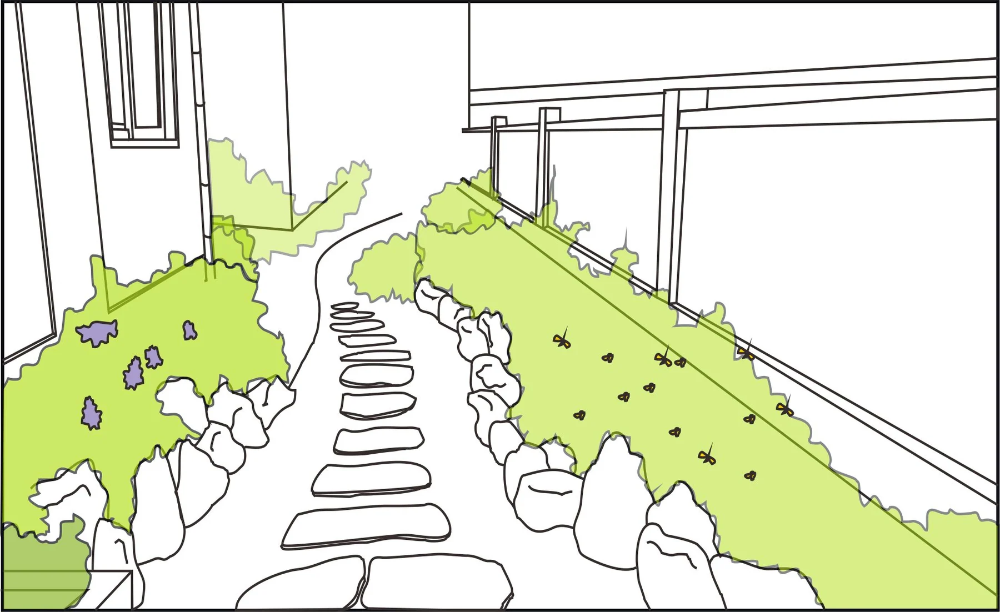
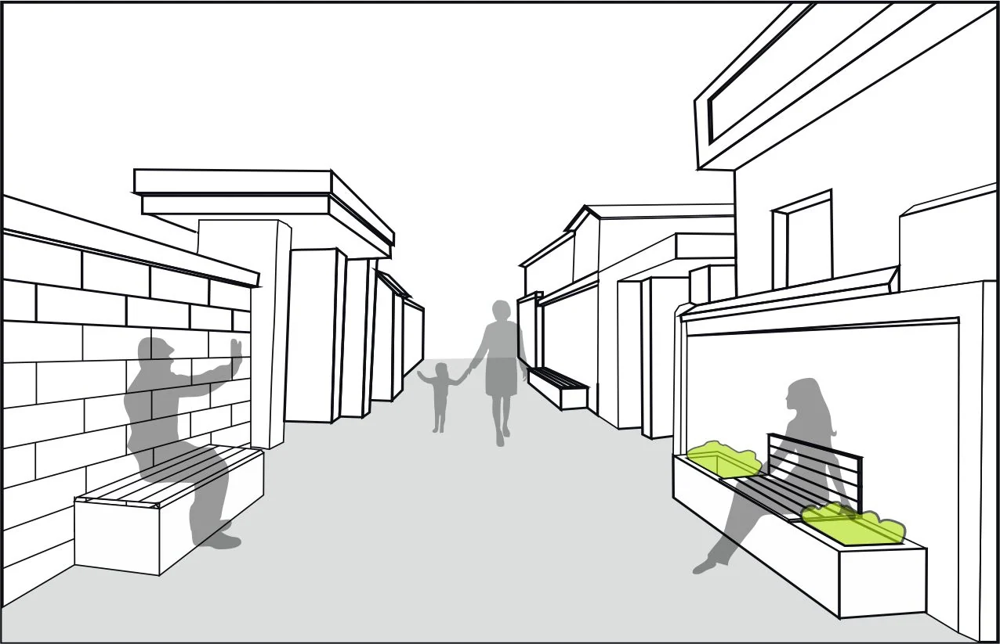
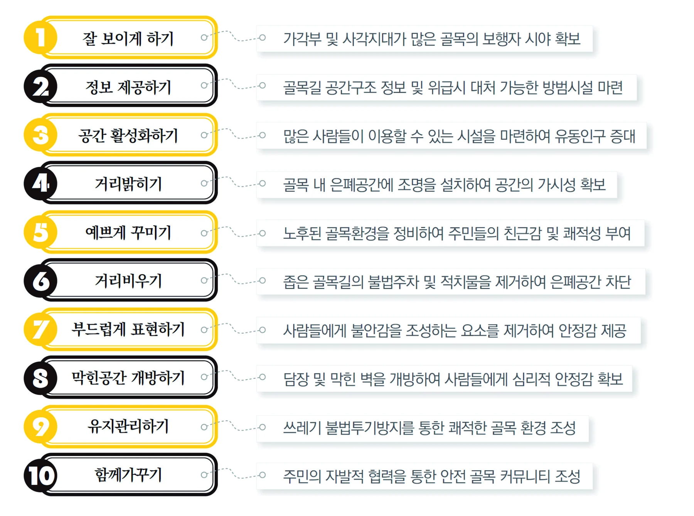

수원시 안전 골목 만들기 10원칙
좋은 공공디자인이 지역을 바꾼다.
“ 사회를 위한 공공디자인, 함께하는 공공디자인 ”
<1. 수원시 안전 골목만들기 10원칙 >
“누구나 쉽게 이해하고 적용할 수 있는 어렵지 않은 안전디자인 가이드 마련”
최근 강력범죄 및 여성, 노인, 아동 등 약자를 대상으로 이루어지는 범죄가 빈발하면서 심각한 사회적 문제로 야기되고 있습니다. 이로 인해 안전에 대한 필요성이 대두되고 중앙정부 및 각 지자체마다 안전 마련대책을 마련하게 되면서 안전 마을 만들기, 범죄예방디자인, 안전디자인 가이드라인 등 다양한 사업들이 운영되고 있습니다. 이러한 안전에 대한 논의 및 연구가 진행되고 있지만, 대상지별로 매번 안전디자인 사업을 운영하기엔 예산확보에 한계가 있고, 안전디자인 가이드라인의 세부적인 정보를 사업진행의 모든 이해관계자가 공유하기에도 여러 가지 현실적인 어려움이 있습니다. 우리나라의 디자인 가이드라인은 평균 200페이지 규모의 보고서 형태로 되어 있고 광의적인 개념으로 정리되어 있어 현장에서 실제 사업을 진행하는 사용자나 주민들이 방대한 정보의 내용을 일일이 숙지하고 적용하기는 어렵습니다. 안타깝게도 안전디자인을 위해 디자인 연구된 내용들이 너무 광범위한 내용을 다루고 전문적인 용어로 구성되어 있으며 글이 많고 내용이 복잡하게 구성된 것이 대부분의 사례에서 볼 수 있는 상황입니다. 결국 실질적으로 정보를 제공 받아야 하는 사용자의 이해도는 떨어지게 되며 이러한 이유로 심도 있게 연구된 좋은 정보들이 가치를 발산하지 못하고 서고에 묻혀있는 경우도 많이 있습니다.
좀 더 실질적으로 안전한 동네를 만들기 위한 전문가들의 연구를 주민들과 관계자들이 쉽게 볼 수 있는 핸드북 형식의 보기 쉬운 디자인 가이드라인을 목적으로 수원시는 ‘안전한 골목만들기 10원칙’이라는 이름으로 누구나 쉽게 이해하고 적용할 수 있는 결과물을 만들었습니다. 사실 주로 안전디자인에 대한 내용은 CPTED[crime prevention through environmental design]라고 하는 범죄예방환경디자인 이론으로 대표되었는데 이는 외국에서부터 시작한 이론으로서 너무 광의적이고 우리의 현실과 맞지 않는 부분도 있는 것이 사실이었습니다.
본 수원시 안전 골목만들기 10원칙 가이드라인을 수립하면서 세운 4가지 목표가 있습니다.
1. 남녀노소 다양한 사람들이 쉽게 이해하고 실제로 적용할 수 있도록 10원칙의 내용을 간결하게 정리하여 내용을 구성하도록 한다.
2. 수원시의 골목길 특성에 부합할 수 있도록 구체적이고 적절한 안전디자인 기준을 마련한다.
3. 이상지향적이 아닌 구체적으로 실행이 가능한 사항을 바탕으로 가이드를 제시한다.
4. 골목환경과 관련한 다양한 전문가들과 일반 시민들이 쉽게 접하고 참고할 수 있도록 휴대용 핸드북으로 제작하여 배포한다.
위의 4가지 목표를 실현하고자 수원시는 안전한 골목길 조성을 주민으로부터 이해를 바탕으로 확산시키는 전략을 수립하고 실제 적용 가능한 기법과 방법을 제시하는 수단을 선택하였으며 광범위한 적용범위의 안전에 대한 가이드라인보다 수원 도시형성의 맥락을 이해하여 자연발생적으로 형성된 골목길의 형태를 분석하고 이를 바탕으로 지역의 골목 특성에 맞는 내용을 연구하였습니다.
수원시의 안전한 골목 만들기는 다음의 5가지 주요사항을 중점적으로 고려하여 진행되었습니다.
첫째, 수원시 골목 유형에 맞는 안전디자인을 마련하였습니다. 하나의 절대적인 원칙을 만들고 답을 제사하는 것이 아니라 수원시의 골목길 형태 및 골목환경 현황을 조사·분석하여 공간적 특성에 맞는 미세한 해결안을 제시함으로써 수원시의 도시 정체성에 부합한 안전디자인 가이드를 제시하였습니다.
둘째, 간결하고 명확한 권장 정보를 엄선하였습니다. 광범위한 많은 양의 정보 제공이 아니라 현장에서 이것만을 지켜질 수 있도록 선택과 집중을 하여 꼭 필요로 하는 간결한 정보를 제공하고자 10가지 원칙이라는 유형을 만들고 그 원칙을 수행할 수 있는 실행지침을 마련하였습니다.
셋째, 제공되는 정보는 이해하기 쉽게 표현하였습니다. 어려운 전문용어는 수정하여 사업시행자, 이해관계자, 주민 등 누구나 쉽게 알 수 있도록 일상적인 간결한 언어로 정보를 기술하고, 부가적인 이미지를 첨부하여 기술된 내용의 이해를 도울 수 있도록 정보를 제공하고자 하였습니다
넷째, 체계적인 관리시스템을 마련하였습니다. 이는 계획, 시공이후의 관리 분야로 주민들 스스로가 우리 마을이 안전한 골목 환경을 이루고 있는지 검토할 수 있도록 안전디자인을 위한 분야를 시야확보, 환경개선, 적치물관리, 정보관리, 유지관리, 방범관리 6가지 실질적인 유형으로 분류하고, 이에 따른 체크리스트를 마련하여 쉬우면서도 필수적이고 체계적인 관리 시스템을 구축하였습니다.
다섯째, 실행을 위한 적극적인 홍보 및 운영방안을 계획하였습니다. 실질적인 실행과 지속적인 운영을 위해 간결하게 정리된 핸드북을 수원시 내 관계부처 및 각 구청, 주민센터에 배포하여 주민들과 관계자들에게 전달, 적용이 가능하도록 하였으며, 언론을 통한 홍보, 구 또는 동별 관련 실무자 및 주민자치위원 등을 대상으로 수원시 안전한 골목만들기 10원칙과 관련해 그 중요성과 적용방법을 순회 교육을 통해 실시하고 있습니다.
『수원시 안전한 골목만들기 10원칙』은 수원시 내에서 디자인을 통한 사회 문제를 해소하고 공공디자인의 가치를 향상시킬 수 있는 좋은 본보기로 자리매김하고 있으며 주민의 호응도 좋아서 핸드북의 인쇄를 몇 차례 추가로 해야 할 정도로 성공적이며 수원시는 이를 기반으로 ‘도시디자인의 10원칙’을 건축, 도시경관, 재난, 방범, 복지, 교육, 여성친화, 고령화 등 다양한 분야로 10원칙 시리즈를 확대해 나아갈 예정에 있습니다.(수원시 담당자 : 장진우팀장 )
수원시의 안전한 골목만들기 10원칙은 우리 사회에 디자인이 공헌 할 수 있는 하나의 좋은 사례로서 고정된 결과물을 제시하는 것이 아닌 과정에 있어서 선택할 수 있고 주민들 스스로 인식하고 개선될 수 있는 기회를 제공하였다는 측면에서 매우 가치가 높다고 볼 수 있습니다.
핀란드 건설을 위한 독립 공공 재단인 Sitra의 전략디자인부서장 Marco Steinberg는 “전통적인 디자인이 사물의 형태를 규정한다면, 새로운 디자인은 의사결정의 형태를 규정합니다.” 라고 하였는데 이는 결과의 디자인의 아닌 과정으로서의 디자인의 중요성을 강조하는 것이며 공공디자인의 핵심 전략과도 일치합니다. 수원시가 진행한 보기 쉬운 가이드라인을 통한 주민의 참여 유도와 안전 골목을 만드는 과정에서의 디자인의 역할 확대는 우리 사회가 당면한 여러 사회 문제를 풀어가야 할 하나의 좋은 사례를 보여주고 있습니다.
■ 첨부이미지
 |  | |||
가이드북 | 수원 안전골목 만들기 10원칙 | |||
 |  | |||
꼴라쥬 이미지 1 | 꼴라쥬 이미지 2 | |||
 |  | |
골목길에 이름을 지어 영역성 만들기 | 바닥안내사인으로 지역정보를 많이 제공하기 | |
 |  | |
건물사이 사용하지 않는 공간을 틈새정원등으로 활용 | 골목길 담장벤치를 통해 소통과 자연감시를 늘리기 | |
